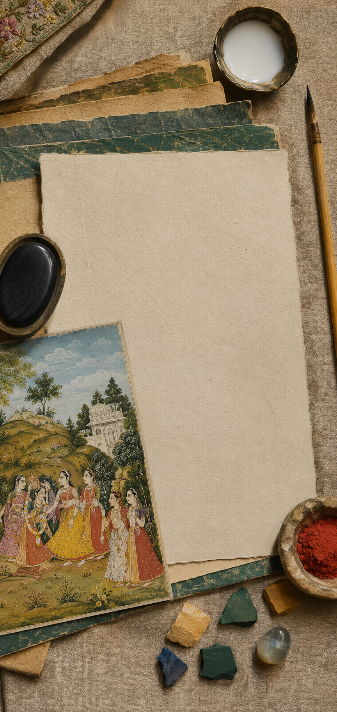
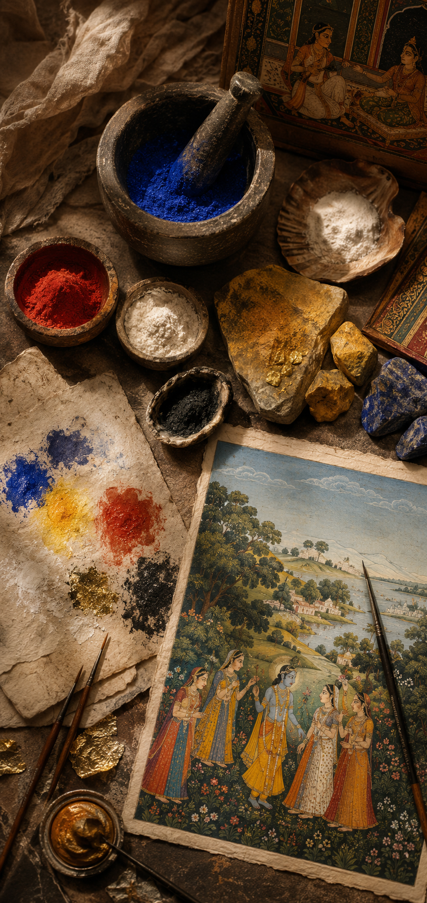
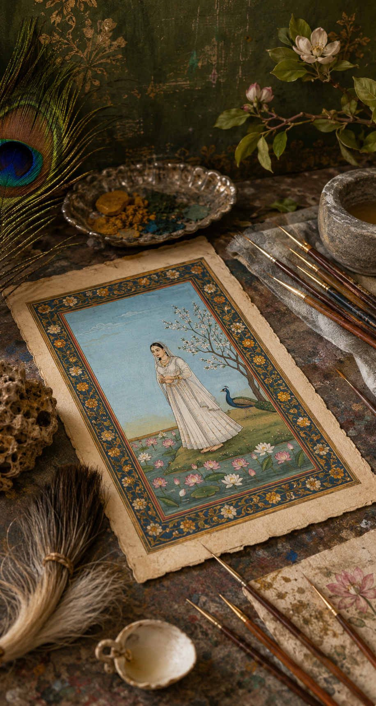
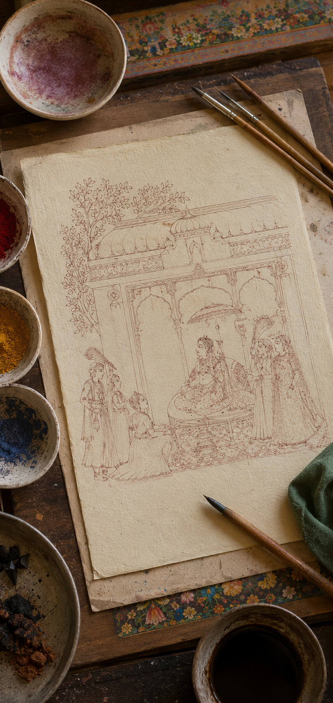
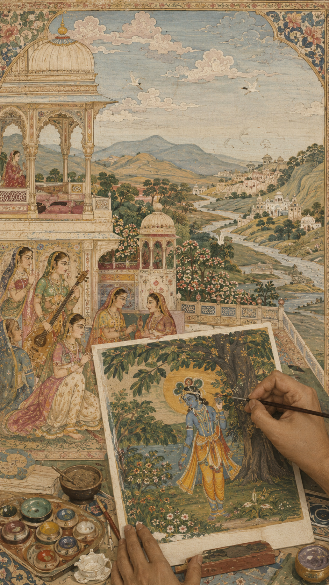
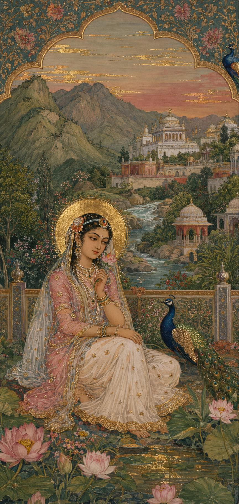
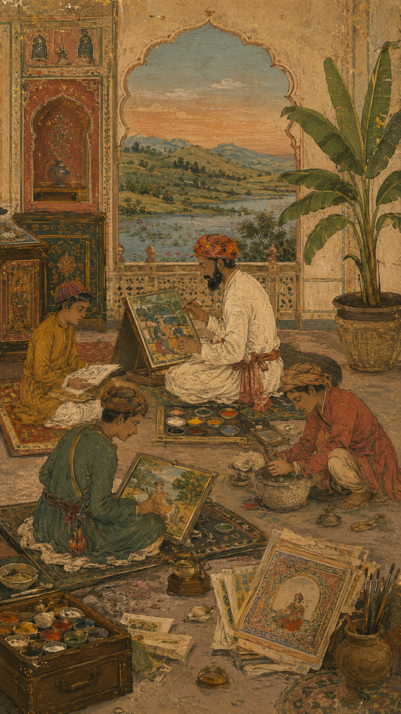

Most historic miniature artworks were executed on wasli — a laminated sheet made by pasting several layers of paper together, then burnishing the surface with polished agate stone until it acquired a near-enamelled finish.
The rich natural pigments were prepared by hand: pure lapis lazuli for midnight sky blues, vermilion from cinnabar, brilliant whites from ground conch shell, and pure gold beaten to micro-thin foil.
Brushes were fashioned from squirrel-tail hairs. The finest master brushes contained as few as three hairs, allowing artists to draw lines as delicate as a lotus petal vein or human eyelash.
Every piece began with a preliminary sketch in charcoal or light cinnabar ink, establishing harmonious proportions and sacred geometry before final permanent outlines were set.
Pigments were layered with rhythmic patience: flat ground washes first, then subtle shading and volumetric modelling, culminating in microscopic strokes detailing fabrics, jewels, and nature.
Pure 24k gold leaf was mixed with gum arabic, applied with single-hair precision for jewellery and halo illumination, then hand-burnished to a radiant metallic sheen.
Master atelier traditions were hereditary lineages passed down through families across centuries. Decades of devotion were poured into mastering stillness, patience, and emotional resonance.






